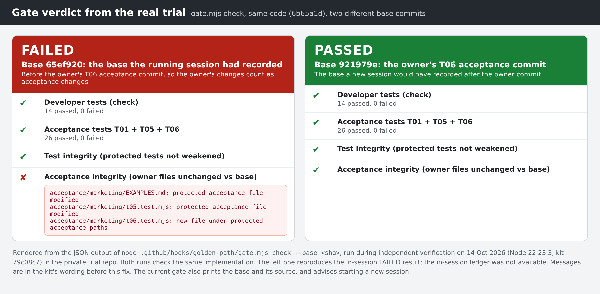
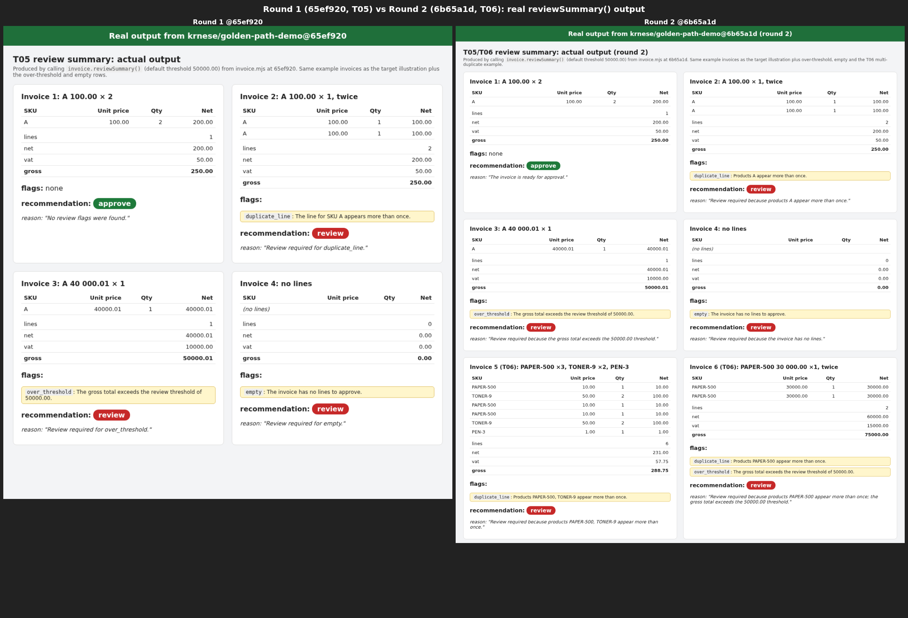

01 / RECORDED TRIAL EVIDENCE
What the owner could actually see.
In the real trial, tests passed but the owner still wanted clearer reasons. These enlarged details show the same duplicate-line invoice before and after that feedback.
Review required for duplicate_line.
Review required because products A appear more than once.
The quotes are transcribed from the screenshots, not generated examples. Inspect the full recorded comparison ↗

01 / PROOF, NOT ADJECTIVES
Green tests weren't enough.
Both runs passed the same 14 developer tests and 26 acceptance tests. The baseline integrity check changed the verdict.
Old session baseline
FAILEDbase: 65ef920 check PASS (14/14) acceptance PASS (26/26) test-integrity PASS acceptance-integrity FAIL outcome: FAILEDInspect the recorded JSON
Approved owner baseline
PASSEDbase: 921979e check PASS (14/14) acceptance PASS (26/26) test-integrity PASS acceptance-integrity PASS outcome: PASSEDInspect the recorded JSON
What actually happened: the owner updated acceptance after the old session baseline. The gate refused that mismatch; checking against the approved new baseline passed. These records were reproduced afterwards, not captured as live CI logs. They do not show an agent trying to tamper with tests.
See the recorded gate verdict screenshot
The same reproduced comparison, shown in the trial's evidence image.



One model. One demo task. One person playing the owner. No productivity gain measured.
03 / THE HONEST LIMITS
What it doesn't do.
Replace engineering judgment
Tests prove their examples, not every business outcome. Owners still inspect evidence and engineers still review changes.
Make local hooks tamper-proof
Protection is heuristic. Unreadable evidence is UNVERIFIED, not a pass. Retry exhaustion or a host timeout can allow stopping without a pass. Required CI remains essential.
Turn Copilot review into approval
Review comments are advice. Your configured review and merge rules remain the authority.
Promise a productivity boost
The mechanism is tested and the workflow demonstrated. Incremental benefit over competent engineering is still unproved.
04 / START WITH YOUR NEXT TASK
You bring the idea.
Copilot does the legwork.
Open your project in VS Code. Use your usual Copilot agent. You don't need a formal specification or a new agent to pick.
- 01
Say what you want
“Make our invoice screen easier to understand. Keep the calculations unchanged.”
- 02
Agree a few examples
“If a product appears twice, flag it for review and name the product.”
- 03
Look at the result
“Show me the real output for our examples, and tell me what's still uncertain.”
The guide includes a setup request you can give Copilot. Start with the simple method-only option, then add automatic checks and protected acceptance with a teammate when you're ready. The full checked loop above needs that configured setup.
Prefer the terminal? Installation and checked setup
Needs Node.js 22+ and git. From a clone of Golden Path, the simple starting option is:
node plugin/install.mjs --target "<your-repo>" --level 1It adds instructions, not automatic checking or enforcement. For owner-controlled acceptance, agree the tests and commands with your team, then use:
git clone https://github.com/krnese/golden-path.git
cd golden-path
node plugin/install.mjs --target "<your-repo>" --level 2 --check "<fast-check-command>" --acceptance-path "acceptance/**" --acceptance-owner "<named-owner>" --acceptance-command "<acceptance-test-command>" --with-ciReplace the placeholders with your repository, existing test commands and named acceptance owner. Approve the tests before installing. The installer preserves existing configuration.
Then configure CODEOWNERS, required CI and Code Owner review, and verify refusal plus legitimate owner revisions. Follow the adoption checklist →